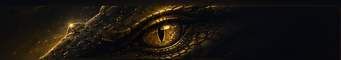

웹서비스 / 웹사이트 2종 배포
CROCEYE
플랫폼을 소개하는 Private Wealth와 EA를 소개하는 EA Shop으로 방문 목적을 나눠 구성한 웹 작업.

CROCEYE풀고 싶었던 문제
처음 방문한 사람과 특정 프로그램을 찾는 사람이 한 화면에서 서로 다른 정보를 찾고 있었습니다.
내가 맡은 일
브랜드와 서비스의 쓰임을 소개하는 랜딩 페이지, 제품을 둘러보는 상점 페이지를 각각 기획했습니다. 프로젝트 전반에서 쓴 시각 자산과 이름을 일관되게 정리했습니다.
결과
CROCEYE Private Wealth와 CROCEYE EA Shop 두 사이트의 배포 기록이 있습니다. 포트폴리오에는 브랜드 이미지와 각 화면의 목적을 담았습니다.
두 사이트는 접근 권한이 설정되어 있습니다.
다음 프로젝트 ModernGlow 맞춤제작 웹 →